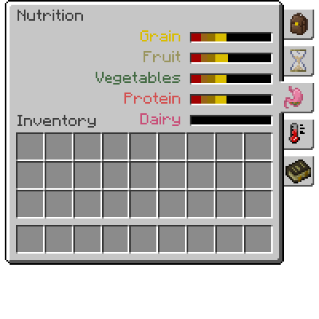

음식과 물
In TerraFirmaCraft, not only must you manage your hunger, but you must manage your thirst. Hunger works similar to vanilla. Most pieces of food restore about a fifth of your hunger bar. Some pieces of food may restore a bit less, such as Cattail Roots. Eating food also restores Saturation, which can be thought of as how full you are.
Some foods are very filling, so they keep you from losing hunger for longer, while some foods have a short-lived effect.
You will lose hunger just from regular gameplay. Hunger drains faster if you do things like sprint, swim, or become Overburdened. Information about the Saturation, Water, as well as Nutrients available from a food is available by hovering over it in your inventory. Using Shift reveals the full tooltip.
모든 음식은 이런 정보가 담긴 툴팁을 가지고 있습니다. 이 툴팁에서는 또한 음식이 상하는 날짜도 표시합니다. 상하는 날짜를 늦추기 위해서는 음식을 보존할 수 있습니다. 이 정보를 보면, 모든 음식이 영양소를 가지고 있는 것은 아니라는 것을 알 수 있습니다. 예를 들면, 반죽은 음식이기는 하지만, 영양소나 포화도, 수분을 가지고 있지 않습니다. 그렇기에 반죽을 생으로 먹는 것은 별로 좋은 선택이 아닙니다.
A food tooltip may look like:
Orange
Expires on: 11:59 July 6, 1004 (in 1 month(s) and 1 day(s))
Nutrition:
- Saturation: 2%
- Water: 10%
- Fruit: 0.5

각 영양소 수치를 나타내고 있는 영양 탭.
영양소
음식을 먹어서 얻을 수 있는 영양소들은 과일, 채소, 단백질, 곡물,그리고 유제품이 있습니다. 모든 영양소를 가득 채우면 당신의 최대 체력이 늘어나지만, 영양 상태가 나쁠수록 최대 체력이 줄어듭니다. 음식을 먹으면 그 음식의 영양소를 얻을 수 있습니다. 수프와 같은 음식은 여러 영양소를 하나의 음식으로 합칩니다. 당신이 예전에 먹은 음식들은 현재의 영양 상태에 영향을 주지 않기에 이는 꽤 중요합니다.
과일: 과일 영양소는 베리 덤불이나 과일 나무 같은 과일 식물로부터 대부분 얻을 수 있습니다. 예외적으로 호박과 수박 역시도 과일 영양소를 제공합니다.
채소: 거의 모든 작물이 채소 영양소를 제공합니다.
단백질: 단백질은 동물의 고기에서 얻을 수 있습니다. 또한 콩 역시 채소와 단백질 영양소를 모두 가지고 있습니다.
곡물: 곡물은 보리와 같은 곡식에서 얻을 수 있습니다. 곡물을 가공하는 방법은 빵 페이지에 있습니다. 부들과 토란 뿌리 역시 곡물에 해당합니다.
유제품: 유제품은 우유로부터 얻어집니다. 우유를 짤 수 있는 동물은 여기서 확인할 수 있습니다. 우유를 가공하고 마시는 법은 유제품 페이지에 있습니다.
어떤 음식이라도 썩으면 쓸모가 없어집니다. 보존 페이지에서는 음식 보존에 관한 정보가 있습니다.
목마름
목마름은 당신 몸에 있는 수분의 수치입니다. 목마름 역시 배고픔과 비슷하게 닳습니다. 기온이 높거나 배고픔이 빨리 닳을수록 목마름 역시 빨리 닳습니다. 다행히도, 민물을 마시면 목마름을 채울 수 있습니다. 물을 마시기 위해서는 물에 대고 오른쪽 버튼을 누르면 됩니다. 바닷물을 마시면 목이 더 말라지며 갈증 효과를 줄 수도 있습니다. 갈증 효과는 당신을 더욱 목마르게 만듭니다.
안전한 물
멀티블록
바닷물을 피하려면 강이나 호수, 부들 등의 민물에서 사는 식물들을 찾아보세요.

물을 들고 다니려면 점토로 주전자를 만들어야 합니다. 주전자는 양동이처럼 오른쪽 버튼을 눌러 채울 수 있습니다. 오른쪽 버튼을 꾹 누르면 물을 마실 수 있습니다.
배고픔이나 목마름이 닳는다면 당신의 움직임과 채굴이 느려지고, 대미지를 받기 시작합니다. 당신이 죽으면 영양소도 초기화됩니다.